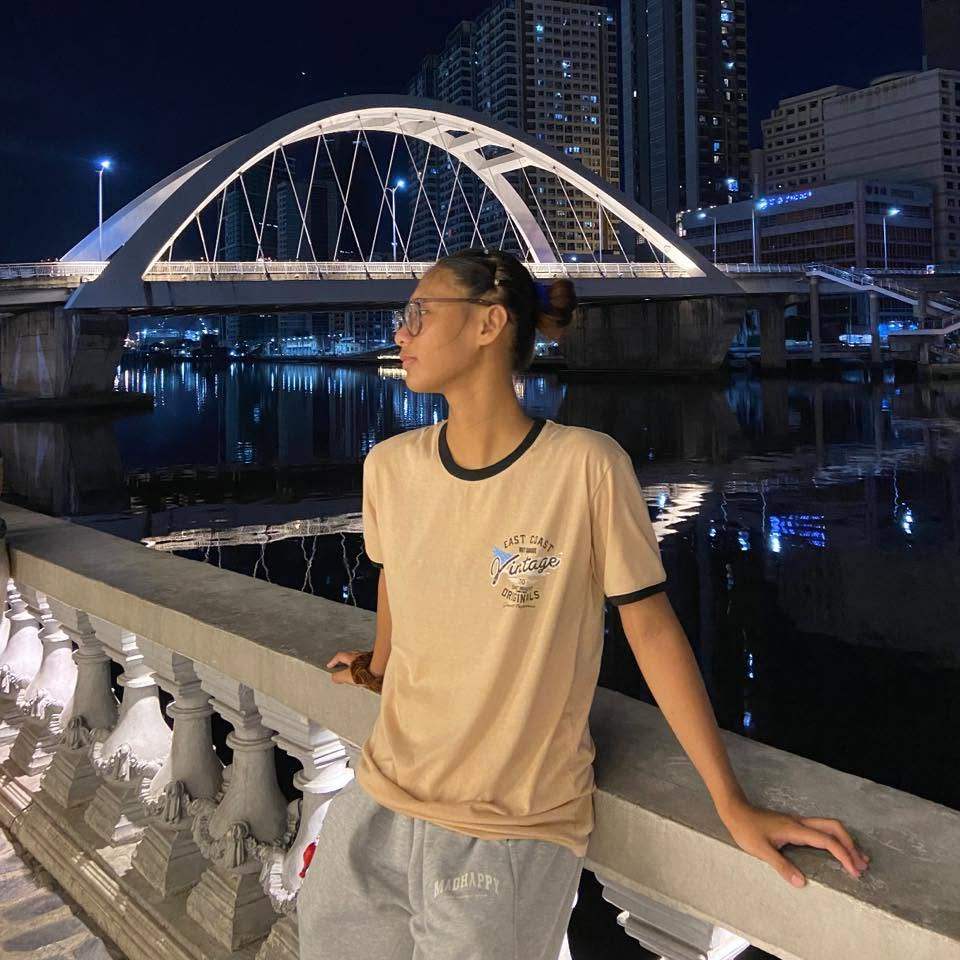

ABOUT ME
Get to know me.

You can call me "CJ"
I am a BSIT student who is also part of the university's volleyball team. I'm someone who enjoys learning new things, exploring my creativity, and taking on challenges that help me grow both personally and professionally.
Outside academics, I enjoy spending time with the people who are important to me, discovering new interests, and doing things that allow me to express myself. as an IT student, I'm also interested in technology, web development, programming, and creative digital projects. I'm still learning and exploring different areas of IT, but I'm excited to see where my journey takes me.
This website is a small reflection of who I am, what I've learned. and what I can create. Thank you for taking the time to dicover more about me, and I hope you enjoy exploring my web page.